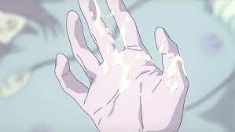

Hospital scene: White Chocolate Fondue

Finger lickn' White Chocolate Fondue
This mouth-watering, finger licking, super sweet white chocolate fondue
will have you asking for seconds after you've already "done the deed".
Ingredients
- 1 cup heavy cream
- 1/2 stick unsalted butter
- 2 (12-ounce) packages of premier white morsels
- Optional For Dipping:
- strawberries
- cookies
- pretzels
- bananas
Steps
- Bring a large sauce pan to medium heat and combine
the cream and butter
- Bring the mixture to a simmer, stirring constantly
- Add white morsels and mix until smooth and slightly cool
- Transfer to fondue pot and serve with your preferred dipping foods
Back to main page